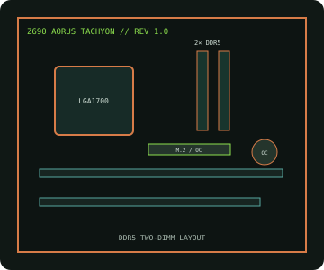

[ INDIVIDUAL COMPONENT // MOTHERBOARDS ]
GIGABYTE Z690 AORUS TACHYON (rev. 1.0)
LGA1700 Z690 overclocking-focused desktop board with two DDR5 DIMM sockets, reinforced PCIe 5.0 expansion and enthusiast firmware controls.

IDENTIFICATION: Exact model/revision is Z690 AORUS TACHYON rev. 1.0; this two-DIMM design is distinct from four-slot AORUS Z690 boards.
Specifications
| Exact board / revision | GIGABYTE Z690 AORUS TACHYON, rev. 1.0 |
|---|---|
| Socket / chipset / CPU | LGA1700, Intel Z690 Express; 12th Gen Intel Core desktop baseline; later CPU support requires the exact CPU-list entry and BIOS. |
| Form factor | ATX, approximately 305 × 244 mm. |
| Memory | Two dual-channel DDR5 DIMM sockets; up to 128 GB listed capacity. High XMP/overclocked rates depend on CPU, BIOS and validated DIMMs. |
| PCI Express | Three x16-length positions: two CPU-connected PCIe 5.0 slots operate at x16 or x8/x8; the chipset-connected third slot is PCIe 3.0 x4. |
| Storage | Four M.2 sockets supporting PCIe NVMe drives plus SATA 6 Gb/s ports; review the manual for shared chipset lanes and disabled ports. |
| Networking / I/O | 2.5GbE LAN, Wi-Fi 6E/BT and USB 3.2 connectivity including USB-C; onboard controls and firmware features target memory/CPU overclocking. |
| BIOS / compatibility | Apply only the rev. 1.0 firmware. Consult CPU list for compatible generation and minimum BIOS; use the two-slot DDR5 QVL for DIMM qualification. |
Compatibility and service notes
The reduced two-DIMM topology is intentional and differs from mainstream four-slot boards. Check exact CPU and BIOS support before upgrading; a physical LGA1700 fit is not sufficient. Follow the QVL and manual for one- or two-module placement and PCIe/M.2 sharing.
Record the exact revision and BIOS before applying overclocking profiles. Return settings to defaults before diagnosing instability and use ESD-safe handling.
Manufacturer sources
- GIGABYTE — Z690 AORUS TACHYON rev. 1.0 specificationsOfficial two-DIMM board specifications and manual.
- GIGABYTE — rev. 1.0 CPU support and BIOSOfficial compatibility and firmware sources.